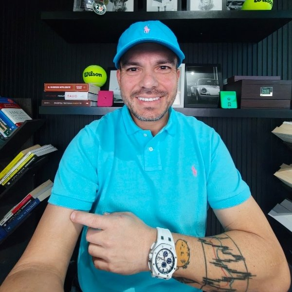

Aprende a operar futuros del Nasdaq en vivo, con Gocho a tu lado.
El Programa de 0 a Trader: un sistema paso a paso, clases en vivo cada semana y tres meses en la Sala de Trading en vivo, antes de aplicar a una cuenta de fondeo. Solo por aplicación.
- Futuros NQ · Dow
- Sala de Trading en vivo
- Clases en vivo semanales
- Preparación para fondeo


{{SWAP}} VSL de Gocho para el programa (3–8 min)
¿Te suena?
Has visto mucho contenido, pero no operas con consistencia
Videos, cursos, indicadores. Sabes mucho, pero cuando abres el gráfico no tienes un plan claro que seguir.
Aprendes solo
Nadie te ve operar en tiempo real ni te dice en qué momento te saltas tus propias reglas.
Las cuentas de fondeo se pierden por las reglas
Una operación demasiado grande o un día sin límite de pérdida y la evaluación se termina, aunque la estrategia fuera buena.
De 0 a Trader, en tres fases
Sin señales y sin atajos. Primero aprendes y validas un sistema, después lo aplicas en vivo junto a Gocho en la Sala de Trading, y solo entonces aplicas a una cuenta de fondeo, con control de riesgo.
Estudia
El curso grabado paso a paso, con acceso de por vida.
Valida
Pruebas tu sistema con el manual, el checklist y la hoja de Excel.
Opera en vivo
Entras a la Sala de Trading en vivo con Gocho durante 3 meses.
Fondeo con control
Aplicas a una cuenta de fondeo cuando tus reglas están claras.
Lo que incluye el programa
Curso grabado paso a paso
Acceso de por vida al sistema completo.
Clases en vivo semanales
Durante 3 meses, con preguntas en directo.
Sala de Trading en vivo
Durante 3 meses, operando futuros junto a Gocho.
Manual, checklist y hoja de Excel
Para seguir y registrar tu plan en cada sesión.
Soporte directo
Por WhatsApp y en la comunidad privada de Skool.
Uso ilimitado del sistema
El Sistema de Trading es tuyo para seguir usándolo.
Historias de alumnos
Resultados individuales, no típicos. El trading de futuros conlleva un riesgo sustancial de pérdida.
Cómo funciona
- 1
Aplica
6 preguntas cortas, unos 2 minutos.
- 2
Agenda tu llamada
Si encajas, eliges un horario para hablar con el equipo de Gocho.
- 3
Decide en la llamada
Vemos dónde estás y si el programa tiene sentido para ti. Sin presión.
Aplica al Programa de 0 a Trader
Seis preguntas, unos dos minutos.
Gracias por tu sinceridad.
Ahora mismo el programa no es el paso adecuado para ti. Empieza con las clases gratuitas en YouTube y la comunidad gratuita en Skool, y vuelve a aplicar cuando estés listo/a.
¿Listo/a para operar con un plan y no solo con contenido?
Aplica aquí. Una aplicación, una llamada y una respuesta clara.
Enviar aplicación